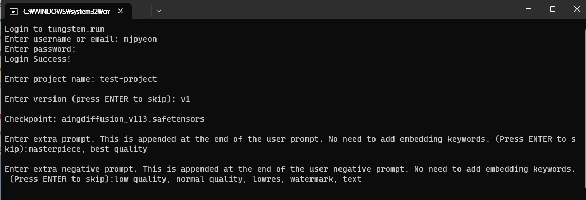
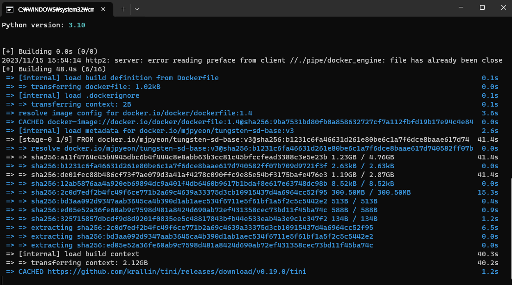
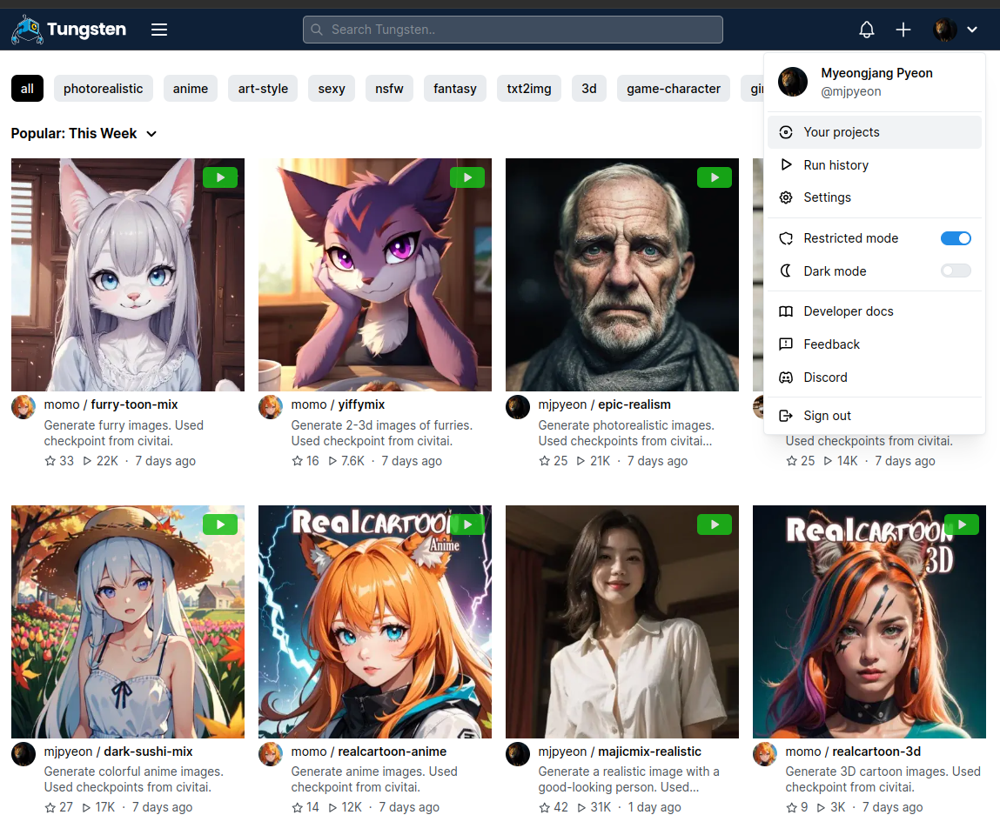

Tungsten Stable Diffusion Template
Tungsten Stable Diffusion Template is for easily building Tungsten model with Stable Diffusion model weights.
For Windows
- Install Docker Desktop for Windows
- Download
tungsten-sd.zipand extract its contents
Download tungsten-sd.zip - Double-click
update.bat - Put your SD files into following directories
- 1 Checkpoint:
tungsten-sd/models/Stable-diffusion - LoRAs (optional):
tungsten-sd/models/Lora - embeddings (optional):
tungsten-sd/embeddings - VAEs (optional):
tungsten-sd/models/VAE
- 1 Checkpoint:
- Double-click
build_and_push.batand enter the responses (e.g. username and password at tungsten.run).  - Wait until building and pushing your model is finished 
- Visit tungsten.run and go to Your projects > YOUR_PROJECT_NAME to find the uploaded model. 
For Linux
Prerequisites
- Stable diffusion weights
- Python 3.7+
- Docker
Create your Stable Diffusion model in Tungsten
1. Clone this repository
git clone --recursive https://github.com/tungsten-ai/tungsten-sd.git
cd tungsten-sd
2. Install Tungstenkit
First, install Tungstenkit:
pip install tungstenkit
3. Prepare weights
Put your Stable Diffusion model weights to models/Stable-diffusion.
If you want to have your own LoRA and VAE, refer to advanced configuration.
4. Build model
tungsten build . -n tungsten-stable-diffusion
4. Create a project on Tungsten
Go to tungsten.run and create a project.
5. Push the model to Tungsten
Log in to Tungsten:
tungsten login
Add tag of the model:
tungsten tag tungsten-stable-diffusion <YOUR_PROJECT_NAME>:<YOUR_MODEL_VERSION>
Then, push the model to the project:
tungsten push <YOUR_PROJECT_NAME>:<YOUR_MODEL_VERSION>
6. Run the model on Tungsten
Visit tungsten.run and go to the project page.
Advanced configuration
LoRA
- Put your LoRA model weights to
models/Lora. - Modify
StableDiffusion.get_lorasfunction intungsten_model.pyto adjust the lora magnitude.
VAE
Put your VAE model weights to models/VAE.
Embedding
- Put your embedding files to
embeddings. - Customize prompt (see Prompt customization)
Prompt customization
Modify following functions in tungsten_model.py:
StableDiffusion.get_trigger_words- Add trigger words at the start of the prompt.StableDiffusion.get_extra_prompt_chunks- Add extra prompt chunks at the end of the prompt.StableDiffusion.get_extra_negative_prompt_chunks- Add extra negative prompt chunks at the end of the negative prompt.